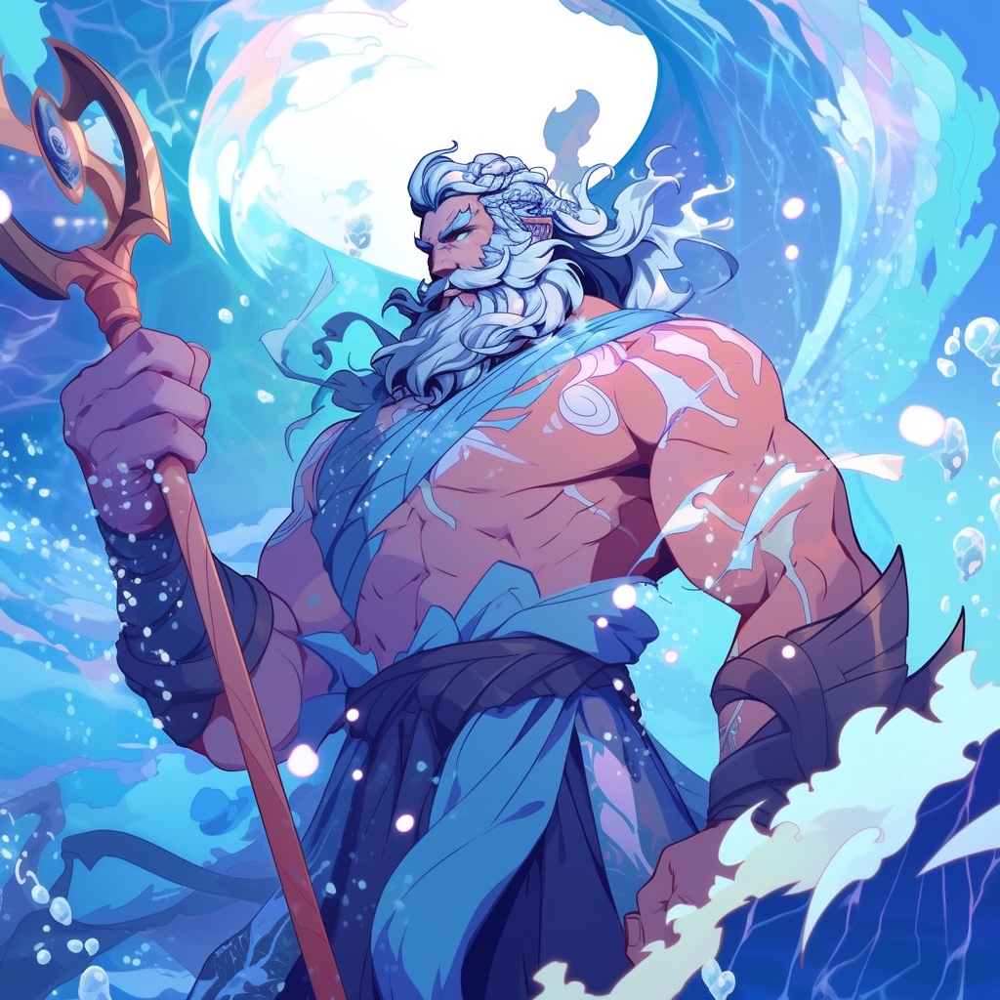
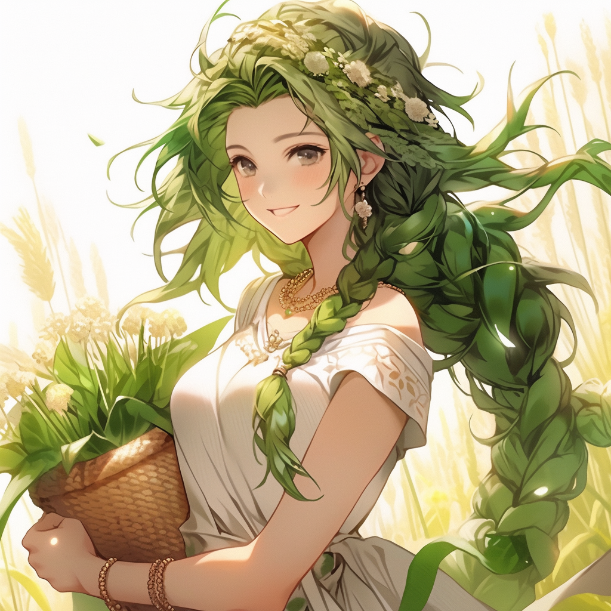
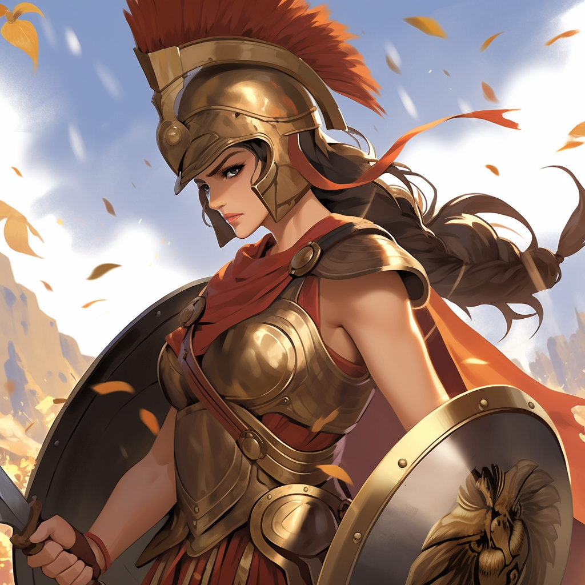
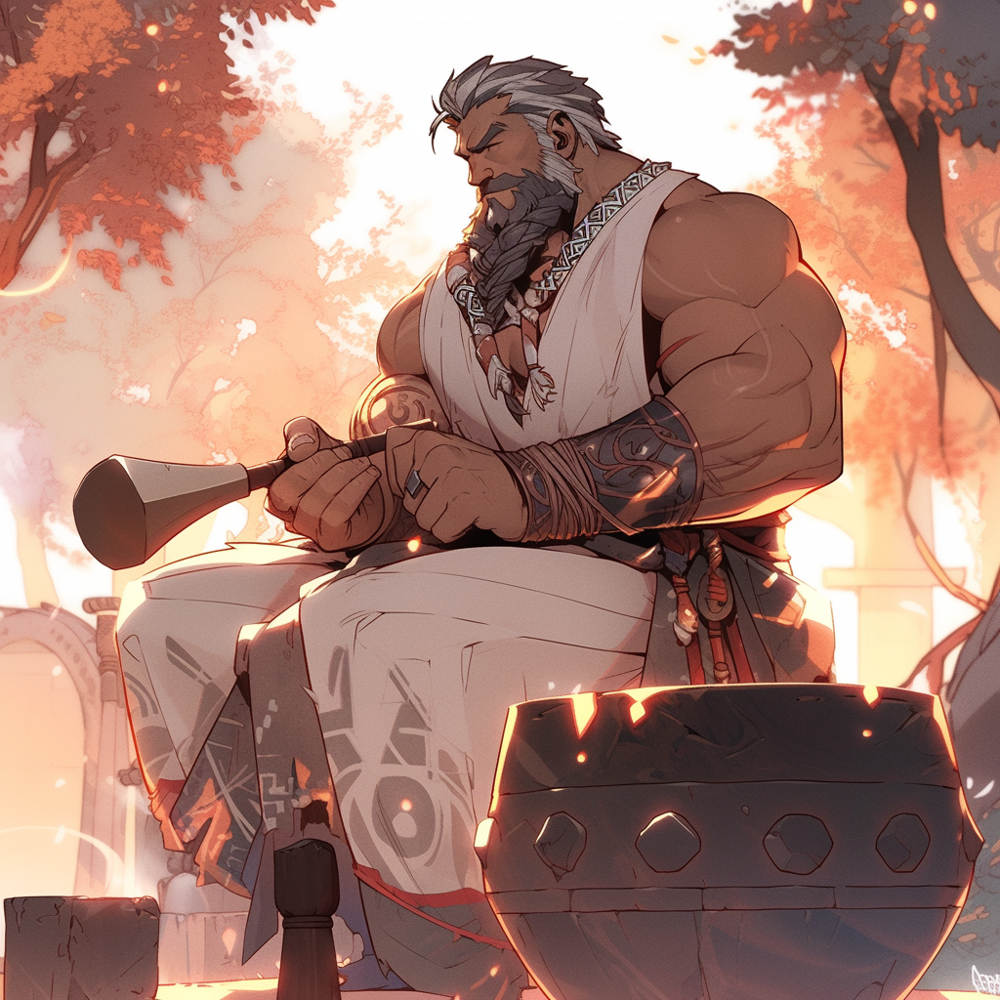
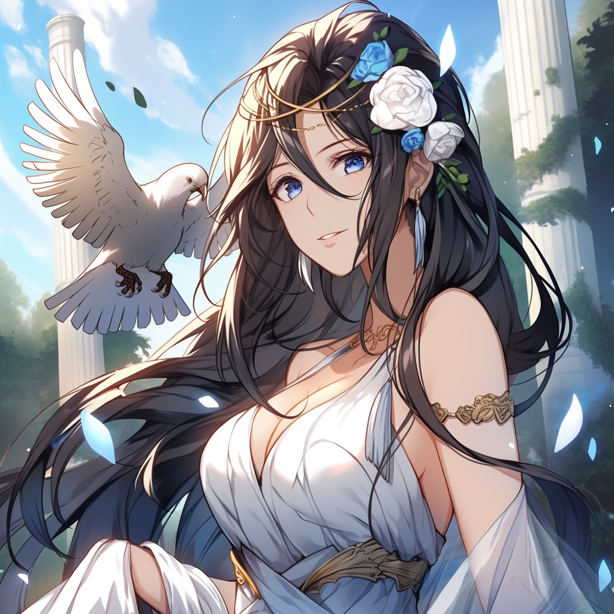

Origin
The ancient Greeks worshiped the Olympians, the twelve major deities of their pantheon. They built temples and shrines in their honor, and their stories and adventures have been told and retold for centuries. These stories continue to fascinate people today, thanks to their complex characters, their relatable human emotions, and their larger-than-life adventures.
Mount Olympus
About Olympian Gods
- The Olympian gods were a family of deities who lived on Mount Olympus, the highest mountain in Greece
- The Olympian gods were worshipped as the principal gods of the Greek pantheon.
- The Olympian gods were often depicted as human-like beings with superhuman powers.
- The Olympian gods were involved in many myths and legends, which often involved human heroes and villains.
The 12 Olympians
- Zeus
- Hera
- Poseidon 
- Demeter 
- Aphrodite
- Ares
- Athena 
- Apollo
- Artemis
- Hephaestus 
- Hestia 
The king of the gods, god of the sky and thunder.
The queen of the gods, goddess of marriage and women.
The god of the sea, earthquakes, and horses.
The goddess of agriculture, grain, and fertility.

The goddess of love, beauty, pleasure, and procreation.
The god of war, violence, and bloodshed.
The goddess of wisdom, handicraft, and warfare.

The god of music, truth, knowledge, light, healing, and archery.

The goddess of the hunt, wilderness, wild animals, childbirth, and protectress of girls.
The god of fire, metalworking, and craftsmanship.
The god of fire, metalworking, and craftsmanship.
The goddess of the hearth, home, and family.